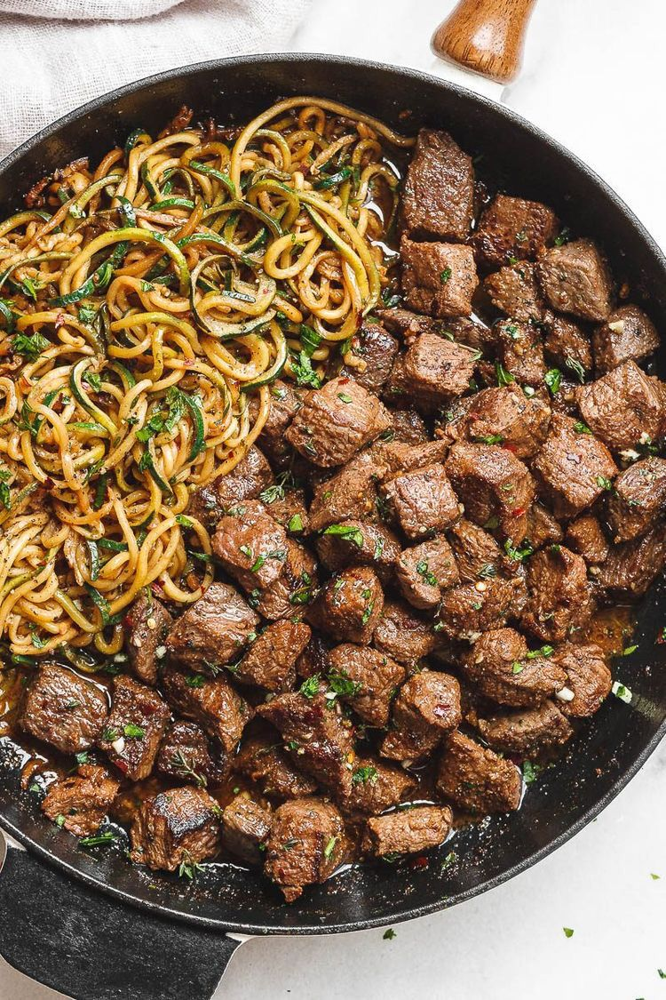

Receita de Carnes

Ingredientes
400 gramas de contrafilé em bifes
1 sachê de Tempero em Pó Knorr Carneknorr Logo
1 colher de sopa de óleo
1 cebola média cortado em fatias grossas
1/2 xícara de chá de água (100 ml)
1 colher de sopa de vinagre de vinho branco
Modo de preparo
Em uma tigela, coloque os bifes, acrescente o Tempero em Pó Knorr Carne e misture.
Em uma frigideira grande, coloque metade do óleo e aqueça em fogo alto.
Disponha metade dos bifes e frite-os, por 2 minutos cada lado, repondo o óleo quando necessário.
Repita o processo com os bifes restantes.
Reserve-os aquecidos e, na mesma frigideira, refogue a cebola por 3 minutos, ou até ficar transparente.
Adicione a água e o vinagre, e mexa, incorporando os resíduos do fundo da frigideira.
Volte os bifes à frigideira, aqueça bem e retire do fogo. Sirva em seguida.